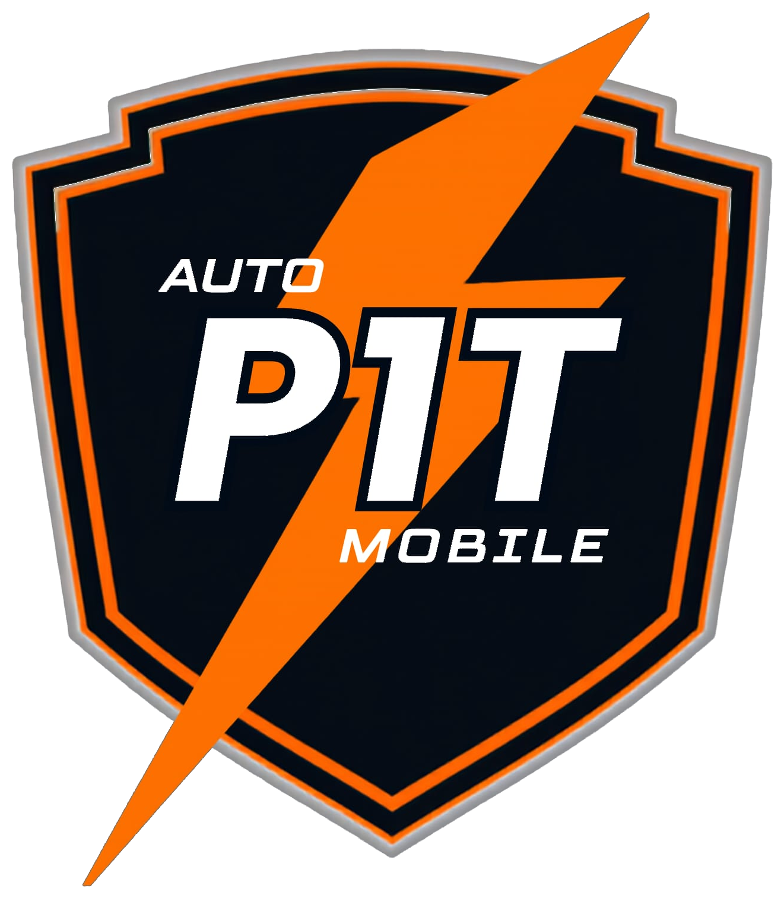

Documento Maestro del Proyecto · v1.0La plataforma on-demand que lleva todo lo que tu auto necesita hasta tu puerta: asistencia vial, mantenimiento, reparación y detailing, con prestadores verificados y precios transparentes. Nace en Houston, Texas, con la ambición de convertirse en el nombre de referencia en servicios automotrices a domicilio en EE. UU.
Auto P1T Mobile es una plataforma de servicios automotrices a domicilio: conecta a dueños de vehículos con prestadores verificados que acuden a su ubicación para resolver cuatro tipos de necesidad — emergencias viales, mantenimiento programado, reparaciones sin taller y detailing. El lanzamiento es en Houston, Texas, con los cuatro pilares activos desde el primer día, y un plan de escalamiento hacia Texas y luego a nivel nacional.
El diferenciador central frente a la competencia (que suele especializarse en un solo pilar) es cubrir las cuatro necesidades bajo una sola app y un solo checkout, con precios fijos publicados y verificación de prestadores como base de la confianza del cliente.
Auto P1T Mobile opera como plataforma de dos lados: un punto de encuentro digital entre oferta y demanda, donde la tecnología coordina la solicitud, el cobro y el control de calidad, pero no presta el servicio directamente. Los prestadores son contratistas independientes —no empleados— que aceptan solicitudes por su cuenta, con su propio equipo y horario; no hay flota propia ni personal en nómina prestando el servicio.
Monetización: comisión por transacción (principal, 15%–25% del ticket, a validar con prestadores reales en Houston), membresía anual para clientes frecuentes, suscripción premium para prestadores (mayor visibilidad, comisión reducida) y contratos B2B con flotas, aseguradoras, autoclubs y dealers (ver sección 4). Este canal B2B es un segundo motor de demanda, con contratos recurrentes en vez de transacciones sueltas — reduce la dependencia total del consumidor final que se identificó como riesgo de plataforma única.
El punto débil de un modelo abierto es justamente eso — abierto. Pero el anclaje no se vende como control: el mensaje al prestador no es "ven a trabajar para Auto P1T Mobile", es lo contrario — la plataforma existe para hacer crecer su negocio independiente, con visibilidad, demanda constante e ingresos que hoy no tiene por su cuenta. Ese giro de mensaje es tan fundamental como el anclaje mismo: sostiene el estatus de contratista independiente (nadie que se percibe dueño de su negocio actúa como empleado) y es el argumento de reclutamiento — un mecánico o detailer no se une a una empresa, hace crecer el suyo. Sobre esa base, Auto P1T Mobile toma prestada del franquiciado la lógica que ancla al prestador, sin convertirlo en franquiciatario ni en empleado:
Nota de diseño: si en algún momento se agrega una cuota de certificación cobrada al prestador, debe mantenerse por debajo de los $500 o atada a un costo real (ej. verificación de antecedentes) — superar ese umbral junto con el control de marca y de método ya descritos activaría la Regla de Franquicias de la FTC para cada prestador.
El prestador es, en el fondo, el cliente interno del producto — el eje sobre el que se sostiene todo lo demás. Un buen producto para el prestador (herramientas simples, pagos rápidos, visibilidad real) resuelve la mayor parte de la ecuación de mercado por sí solo; conseguir clientes finales, en comparación, es un problema de marketing, no de producto. Por eso la experiencia del prestador dentro de la app recibe la misma prioridad de diseño que la del cliente final, no un rol secundario.
El mercado de Auto P1T Mobile se arma sobre los cuatro pilares del catálogo. La base es mantenimiento y reparación automotriz —el segmento más grande y de mayor frecuencia—, con la asistencia vial como gancho de alta frecuencia para adquisición de clientes y el detailing como capa de cross-sell sobre la misma base de clientes y prestadores.
$211.1B en 2026. El segmento móvil/on-demand crece 9.2% anual, más rápido que el mercado general.
$5.99B → $7.73B — crecimiento proyectado 2022–2029.
$18.7B — el pilar más pequeño; opera como producto de alta frecuencia, no como negocio central.
El canal B2B de dealers (sección 4) se apoya en un mercado todavía mayor: cerca de 40 millones de autos usados cambian de dueño cada año en EE. UU., y cada uno pasa por un proceso de reacondicionamiento antes de poder venderse.
Los marketplaces de oferta homogénea y baja fricción para cambiar de proveedor —como el transporte por app— tienen defensibilidad débil: el cliente no tiene lealtad, solo quiere el más cercano y barato. Auto P1T Mobile evita esa trampa por tres vías: la oferta no es homogénea (diagnóstico con escáner, certificación y herramienta especializada diferencian a un prestador de otro); el cliente concentra cuatro necesidades distintas en una sola app, lo que eleva su valor de vida aunque el prestador trabaje también para la competencia; y el canal B2B de dealers corre en paralelo al de consumidor final, con contratos recurrentes que no dependen de la adquisición diaria de un solo lado del mercado.
Vive en zonas urbanas/suburbanas de Houston, valora conveniencia y tiempo. Busca precio transparente, prestadores verificados, seguimiento en tiempo real y reseñas confiables.
Mecánicos independientes, detailers y talleres móviles que buscan demanda constante sin invertir en marketing propio. Se le da la misma prioridad de diseño que al cliente final: pagos garantizados, herramientas simples de agenda y cobro, y visibilidad real — porque un buen producto para el prestador es lo que sostiene la calidad de todo lo demás.
Los dealers independientes y lotes "buy here pay here" — muy numerosos en Houston — necesitan dejar cada vehículo listo para exhibir (reconditioning) lo más rápido posible: mientras el auto no está en el frente del lote, genera solo costo. Es un mercado adyacente al mismo catálogo de servicios, con un comprador distinto (el dealer, no el dueño final) y un modelo de contrato recurrente en vez de transacción única.
$32–$100 por vehículo, por día, mientras no está listo para vender.
Promedio de la industria: 5–10 días; los mejores dealers logran 3–5 días.
Más del 42% de los operadores comerciales ya subcontrata detailing con terceros.
| Plataforma | Enfoque | Diferenciador |
|---|---|---|
| YourMechanic | Reparación y mantenimiento a domicilio | Garantía 12 meses / 12,000 millas |
| Wrench | Diagnóstico, frenos, mantenimiento | Red nacional consolidada |
| RepairSmith | Reparación y mantenimiento móvil | Cotización instantánea |
| Spiffy | Detailing, lavado, cambio de aceite | Fuerte enfoque en embellecimiento |
Ningún competidor principal cubre de forma integrada asistencia, mantenimiento, reparación y detailing bajo una sola app. Auto P1T Mobile puede diferenciarse siendo la superapp de servicios automotrices a domicilio.
El criterio que separa Mantenimiento de Reparación es la duración, no el tamaño del trabajo: si se resuelve el mismo día en una sola visita, es Mantenimiento; si toma más de un día —normalmente porque hay que esperar una pieza o su regreso de un proceso externo— pero se hace con herramienta de mano y gato, sin taller fijo, es Reparación. Lo que exige plataforma de alineación, banco de pruebas o desarmar el motor por completo no es "reparación mayor" de este pilar: es trabajo de taller y queda fuera del alcance móvil (ver 7.3).
Emergencia vial inmediata: batería, llanta, combustible, cerrajería vehicular.
Se resuelve el mismo día: diagnóstico, frenos, bujías, accesorios, fluidos.
Más de un día, sin taller: bomba de agua, alternador, motor de arranque, suspensión.
Estética y protección: lavado, encerado, cerámico, tinte, PPF.
Barrido de todo servicio automotriz ofrecible a domicilio, con precio de referencia de mercado (EE. UU./Houston, 2026). Los servicios marcados "a cotizar" no cuentan todavía con un precio de mercado confiable y deben cotizarse con proveedores locales antes de publicarse.
| Servicio | Precio de referencia |
|---|---|
| Arranque con puente (jump start) | $50–$85 |
| Batería en sitio (prueba y reemplazo) | $120–$220 |
| Cambio o reparación de llanta ponchada | $40–$95 |
| Apertura de vehículo (lockout) | $50–$120 |
| Entrega de combustible | $50–$90 + combustible |
| Carga móvil de emergencia para EV | $75–$200 |
| Servicio | Precio de referencia |
|---|---|
| Lectura y borrado de códigos (OBD-II) | $20–$70 |
| Diagnóstico de check engine | $70–$200 |
| Diagnóstico avanzado full-system | $200–$500 |
| Diagnóstico de ABS, airbag o transmisión | $90–$300 |
| Diagnóstico eléctrico (multímetro/osciloscopio) | $80–$250 |
| Escaneo bidireccional | $100–$300 |
| Programación o codificación de módulos | $100–$350 |
| Reset de servicio / relearn TPMS | $20–$120 |
| Calibración de ADAS (cámaras/radar) | $150–$500 |
| Inspección técnica pre-compra | $40–$250 |
| Cambio de bombillos/focos | $15–$90 |
| Cambio de limpiaparabrisas | $15–$45 |
| Fusibles y relés | $25–$80 |
| Batería de control remoto (llave) | $15–$40 |
| Inflado y presión de llantas, rellenado de fluidos | $15–$60 |
| Instalación de dashcam | $80–$500 |
| Cámara o sensores de reversa | $120–$350 |
| Luces LED o faros auxiliares | $80–$300 |
| Estéreo, alarma, arranque remoto o GPS | $100–$450 |
| Cargador USB, enganche ligero, accesorios | $40–$200 |
| Escudo antirrobo de catalizador | $150–$400 |
| Cambio de frenos y balatas por eje | $90–$350 |
| Cambio de bujías o bobinas de encendido | $90–$350 |
| Banda serpentina y tensor | $100–$300 |
| Cambio de aceite, filtros y rotación | $30–$200 |
| Inspección multipunto y llanta nueva a domicilio | $40–$150 |
| Filtro de aire de cabina o de motor | A cotizar |
| Cambio de líquido de frenos | A cotizar |
| Cambio de líquido de dirección hidráulica | A cotizar |
| Servicio de líquido de transmisión automática | A cotizar |
| Cambio de líquido de diferencial o transfer case | A cotizar |
| Limpieza de sistema de combustible (aditivo, en el vehículo) | A cotizar |
| Reemplazo de mangueras de radiador o termostato | A cotizar |
| Reemplazo de sensor TPMS | A cotizar |
| Programación o duplicado de llave con chip | A cotizar |
| Reparación básica de cerradura o encendido | A cotizar |
| Recarga de gas refrigerante A/C (sin fuga) | A cotizar |
| Instalación de cargador EV nivel 2 en el hogar | A cotizar |
| Servicio | Precio de referencia |
|---|---|
| Instalación de bomba de agua | $400–$1,000 |
| Alternador | $250–$700 |
| Motor de arranque | $250–$700 |
| Regulador o motor de vidrio eléctrico | $150–$400 |
| Amortiguadores o struts | A cotizar |
| Rótulas y terminales de dirección | A cotizar |
| Barra estabilizadora y bujes | A cotizar |
| Reparación de fuga de A/C | A cotizar |
| Radiador (reemplazo completo) | A cotizar |
| Bomba de combustible | A cotizar |
| Correa o cadena de distribución | A cotizar |
| Sistema de escape o mofle | A cotizar |
| Catalizador (reemplazo de la pieza) | A cotizar |
| Turbo y componentes de sobrealimentación (reemplazo de pieza) | A cotizar |
| Limpieza y calibración de inyectores en banco | A cotizar — retiro de la pieza y envío a banco de pruebas |
| Servicio | Precio de referencia |
|---|---|
| Lavado exprés a domicilio | $50–$100 |
| Detailing exterior | $100–$175 |
| Detailing interior | $139–$225 |
| Detail completo (interior y exterior) | $180–$400 |
| Descontaminación de pintura (clay bar) | $60–$150 |
| Encerado tradicional | $50–$120 |
| Sellador de pintura sintético | $100–$200 |
| Pulido o corrección de pintura (1 paso) | $200–$450 |
| Corrección de pintura multi-paso | $450–$900 |
| Instalación de película polarizada | $200–$650 |
| Recubrimiento cerámico de entrada | $500–$900 |
| Recubrimiento cerámico multi-capa | $900–$2,000 |
| Restauración de faros | $50–$120 |
| Tratamiento de cuero y eliminación de olores | $60–$180 |
| Reparación de abolladuras sin pintura (PDR) | $60–$350 |
| PDR por daño de granizo | $500–$3,500 |
| Instalación de PPF, frente parcial | $600–$1,500 |
| Instalación de PPF, frente completo | $1,500–$3,500 |
| Instalación de PPF, cuerpo completo | $5,000–$8,000 |
| Instalación de vinyl wrap | $1,500–$6,000 |
| Pintura de calibradores de freno | A cotizar |
| Detailing de motor (engine bay) | A cotizar |
| Cuidado de capota de convertible | A cotizar |
| Paquete | Incluye | Precio de referencia |
|---|---|---|
| Recon básico | Inspección multipunto con escáner + detail completo | $220–$550 por vehículo |
| Recon completo | Recon básico + PDR de golpes menores + retoque de pintura + restauración de faros | $450–$1,200 por vehículo |
| Contrato de lote por volumen | Tarifa fija mensual con turnaround garantizado (ej. 24–48 h por unidad) | A cotizar por volumen |
| Servicio | Precio de referencia |
|---|---|
| Membresía anual o plan familiar | $59–$299/año |
| Contratos B2B (flotas, aseguradoras, autoclubs, dealers) | Tarifa/retainer |
| Venta de productos (baterías, llantas, kits) | Margen sobre costo |
| Capa | Recomendación |
|---|---|
| App móvil (cliente y prestador) | Flutter o React Native — un solo código base para iOS/Android |
| Backend | Node.js/NestJS, arquitectura de microservicios |
| Base de datos | PostgreSQL + PostGIS para matching por cercanía |
| Geolocalización | Google Maps Platform |
| Pagos | Stripe Connect (split de comisión y payout a prestadores) |
| Notificaciones | Firebase Cloud Messaging + Twilio (SMS) |
| Verificación de antecedentes | Checkr o similar |
| Infraestructura | AWS o GCP, contenedores |
Entrevistas con prestadores y usuarios en Houston, pricing definitivo, diseño UX/UI.
Lanzamiento con red abierta de prestadores independientes verificados; Reparación opera principalmente vía derivación a talleres socios.
Cobertura completa del área metropolitana, crecimiento de la red de prestadores por volumen de demanda.
San Antonio, Austin, Dallas-Fort Worth.
Expansión por densidad poblacional y disponibilidad de prestadores.
Descargas, usuarios activos, prestadores verificados activos en Houston.
GMV mensual, ticket promedio, tasa de repetición de compra.
Calificación promedio, tasa de disputas, ETA real vs. estimado.
| Riesgo | Impacto | Mitigación |
|---|---|---|
| Escasez de prestadores verificados al lanzar | Alto | Reclutamiento pre-lanzamiento con comisión reducida inicial |
| Competencia establecida ya opera en Texas | Medio | Diferenciación por los 4 pilares integrados |
| Calidad inconsistente afecta la confianza | Alto | Checklist digital, fotos antes/después, calificación con consecuencias |
| Incidentes de seguridad en domicilio del cliente | Alto | Verificación de antecedentes, seguro obligatorio, geolocalización activa |
| Clasificación laboral de prestadores (contratista vs. empleado) | Alto | Cumplir la regla de "marketplace contractor" de Texas: pago por transacción, sin horario fijo, sin exclusividad. El riesgo federal (DOL/IRS) sigue vigente y es un criterio distinto — requiere asesoría legal laboral antes del lanzamiento |
| Fuga de transacciones fuera de la plataforma (disintermediación) | Alto | Ofrecer valor que no existe fuera de la app: garantía, seguro del servicio, historial del vehículo, pago protegido — no solo el match inicial |
| Baja lealtad de prestadores (multi-homing en varias apps) | Medio | Es inherente al modelo gig y legalmente necesario para mantener el estatus de contratista; se compensa con mejor pago neto, prioridad de solicitudes y pagos más rápidos que la competencia |
| Dependencia de infraestructura de terceros (pagos, mapas, tiendas de apps) | Medio | Sin alternativa realista a corto plazo; mitigar con monitoreo de estado de servicio y cumplimiento estricto de políticas de Stripe/Apple/Google |
| Arranque de doble lado (sin prestadores no hay usuarios, sin usuarios no hay prestadores) | Alto | Reclutar oferta antes del lanzamiento público en Houston; subsidiar comisión los primeros meses para asegurar cobertura mínima |
IBISWorld — Car Wash & Auto Detailing Industry (US) 2026 · Future Market Insights — Mobile Car Wash & Detailing Market · Fortune Business Insights — U.S. Roadside Assistance Market · DetailPilot, Housecall Pro, AutoDetailer.com — Car Detailing Pricing Guides 2026 · Major Detailz, Panda Hub, SH Wash — Houston Detailing Pricing 2026 · Spec Auto Detailing — Ceramic Coating Cost 2026 · ConsumerAffairs, AutoNation Mobile Service — Water Pump Replacement Cost 2026 · Ecostify, Jet Black Tint — Window Tinting Cost 2026 · TravelMechanic, CarParts.com — Mobile Mechanic Services & Cost 2026 · Aaron's Automotive Detailing, Kalise — PPF Cost Guide 2026 · Dentevo, Pro PDR — Paintless Dent Repair Cost 2026 · VinylFrog — Car Wrap Cost 2026 · Texas DPS — Vehicle Safety Inspection Changes (2025) y Emission Inspection Criteria · Houston Permitting Center — Automotive Repair Facility License · Texas.gov — Business Licenses & Permits · Texas Workforce Commission — Independent Contractors / Marketplace Contractors · Epstein Becker Green — Texas Rule on Gig Workers · U.S. Department of Labor — Field Assistance Bulletin 2025-1 (FLSA independent contractor rule) · Harvard Business School — Disintermediation in Two-Sided Marketplaces · Sharetribe — Marketplace Disintermediation / Platform Leakage · Fortune Business Insights, GM Insights — Car Detailing Service Market Size 2026 · Rapid Recon, AutoFinance (AFC) — Dealer Holding Cost & Days-to-Frontline 2026 · Mordor Intelligence — United States Automotive Service Market 2026 · Mordor Intelligence — United States Used Car Market, unidades vendidas anuales · NFX, The Marketplace Guide — Network Effects & Defensibility in On-Demand Marketplaces · FTC — Franchise Rule, 16 CFR Part 436 (elemento de marca, control y cuota) · Sterling, Vetty — Verificación y niveles de certificación en plataformas gig de servicios a domicilio · Angi — Programa de certificación y verificación de prestadores